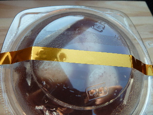

道の駅とんばらで、ぜんざいを買いました。
2011/09/23
道の駅とんばらの横にある、青空市ぶなの里でひやしぜんざいを買いました。

餅米粉、うるち米粉、小豆が飯南町産です。
それが150円です。
良心的な値段ですね。
夕方行ったので、さらに70円引きでとってもお得でした。
道の駅は寄ってみるといいものがありますね。
島根県飯石郡飯南町花栗48
2011/09/23
道の駅とんばらの横にある、青空市ぶなの里でひやしぜんざいを買いました。

餅米粉、うるち米粉、小豆が飯南町産です。
それが150円です。
良心的な値段ですね。
夕方行ったので、さらに70円引きでとってもお得でした。
道の駅は寄ってみるといいものがありますね。